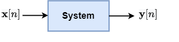
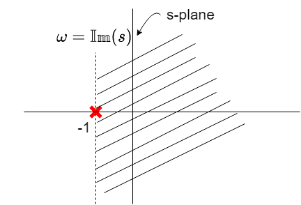
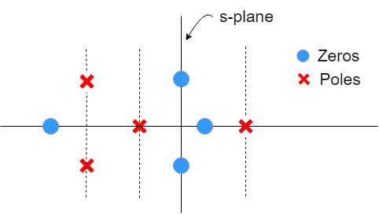

The Laplace transform of a continuous time signal x(t) can be expressed as:
X(s)=∫−∞∞x(t)e−stdt
Where s=σ+jω represent a complex frequency on a complex number plane.
e−st=e−(σ+jω)t=e−σte−jωt
We can clearly see that
Re{e−st}=e−σtcos(ωt)
Im{e−st}=−e−σtsin(ωt)
Eigenfunctions of LTI systems
Let the system h(t) be a linear and time invariant (LTI) system and the input x(t)=est. The output y(t) of this system can be written as

Error in LaTeX ' \text{y}(t) = e^{st} \* h(t) ': KaTeX parse error: Undefined control sequence: \* at position 23: …y}(t) = e^{st} \̲*̲ h(t)
=∫_−∞∞h(τ)es(t−τ)dτ
=∫_−∞∞h(τ)este−sτdτ
=est∫_−∞∞h(τ)e−sτdτ
=H(s)est
est is known as eigen function for LTI system and it preserves the shape of the input signal.
Example - All RLC circuits are LTI systems. Recall that for any AC source, we always get sinusoidal voltage/current across any part of the circuit. The amplitude and phase might change but the shape remains the same
The Laplace transform has always two parts:
Mathematical expression
Region of convergence: the region in the complex s-plane, where the mathematical expression is valid.
Example
x(t)=e−tu(t)
Solution: The Laplace transform is given as:
X(s)=∫_−∞∞x(t)e−stdt
=∫_0∞e−te−stdt
=∫_0∞e−(s+1)tdt
=s+11
Region of convergence (ROC) is region in the s-plane where the above expression is valid.
The expression is valid if Re{s+1}>0 i.e. Re{s}>−1. s=−1 is a point of singularity.

Let X(s) be the polynomials in s variable as below:
X(s)=B(s)A(s)
Roots of A(s) i.e. A(s)=0→ zeros
Roots of B(s) i.e. A(s)=0→ poles
Note: Poles play important role to decide ROC. ROC cannot have poles within them.
Exercise
What is the ROC for the pole-zero plot shown below?

Linear constant coefficient differential equations (LCCDE)
Any linear constant coefficient differential equations (LCCDE) in Laplace domain can be expressed as ratio of polynomials.
Example: Let x(t)=dtdy+ay(t)
Taking Laplace transform of the above equation:
X(s)=sY(s)+aY(s)
X(s)=(s+a)Y(s)
Y(s)=s+aX(s)
H(s)=X(s)Y(s)=s+a1
Here H(s) is known as transfer function or system function.
Application of Laplace transform for system analysis
Let h(t) be the system with input x(t) and output being y(t).
y(t)=x(t)∗h(t)
The system input-output relationship in Laplace transform can be expressed as:
Y(s)=X(s)H(s)
We are interested in additional system properties and their effect on impulse response and system function
Causality of LTI system
For LTI system to be causal, we should have
h(t)=0,∀t<0
y(t)=x(t)∗h(t)=∫−∞∞x(τ)h(t−τ)dτ
For Causality: we should only use x(τ) for τ≤t
τ>t,h(t−τ)=0
h(t)=0∀t<0
For a causal system (i.e.,h(t) is a right-sided signal) , what is nature of H(s) ?
ROC of H(s) will be right-sided plane. (Converse is not true in general)
For a system with rational system function, causality is equivalent to the ROC being right-sided plane to the right of right most pole.
Example:
H(s)=s+11andRe{s}>−1
h(t)=e−tu(t) (Causal)
H(s)=s+1es and Re{s}>−1
h(t)=e−(t+1)u(t+1) (Non-causal)
Stability of LTI system (bounded input bounded output)
An LTI system is said to be stable if
∫∞∞∣h(t)∣dt<∞
i.e. h(t) is absolutely integrable
We know Laplace transform is given as:
H(s)=∫∞∞h(t)e−stdt
H(s)∣s=0=∫∞∞h(t)dt<∞
Laplace transform converges at s=0, In fact, for any s=jω=0+jω,H(s)∣_s=jω<∞→ system is stable